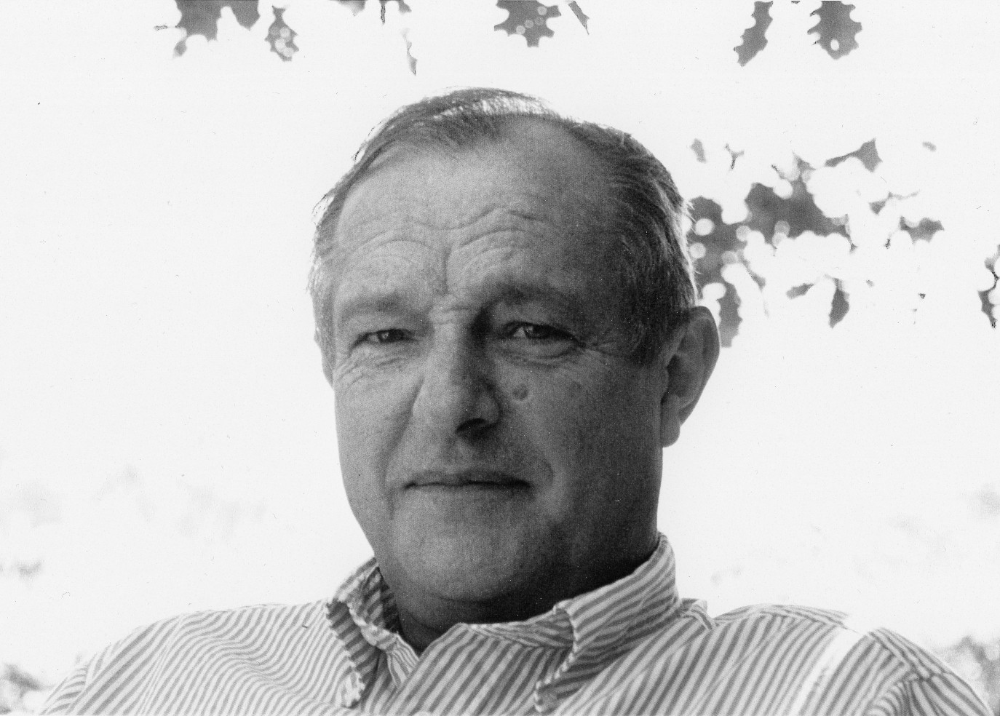

30
Avr.
Vernissage — Philippe Carpentier & Thierry Farcy
Jeudi 30 avril 2026 de 18h à 20h · Galerie des Croisiers, Caen · Entrée libre

Philippe Carpentier
Paris, 1942 — Arromanches, 2011
Philippe Carpentier est né à Paris en 1942. Après avoir travaillé dans l'édition et le journalisme, il se consacre à son art à partir de 1976.
Sa rencontre dans les années 1980 avec la célèbre calligraphe japonaise Sunsho Machi est déterminante ; c'est elle qui l'initie à la peinture sur grand format. Ces multiples expériences au Japon lui donnent pour toujours le goût du matériau vrai, du geste authentique, celui qui ne permet aucune reprise, garant d'une sincérité totale. Philippe Carpentier travaille exclusivement à l'eau, toutes les techniques qui en découlent lui sont familières : aquarelle, détrempe, encre, colle de peau, gomme arabique.
Inspiré par les paysages marins, il s'éloigne progressivement de la représentation au profit d'une véritable exploration de la matière. Ses couleurs se fondent alors en de larges aplats presque monochromes, où il développe une forme originale de détrempe, influencé par l'art des paravents japonais. Des hasards, rythmes et gammes infinies naissent de la rencontre entre le geste et la fluidité de la peinture. Philippe Carpentier a su renouveler la pratique de l'aquarelle, puisant dans sa longue observation de la mer pour créer des univers imaginaires et sensibles.
Il s'éteint dans sa maison d'Arromanches en 2011, au coeur de cette Normandie maritime qui l'inspirait tant.
« Carpentier aime les lignes longues, fortes et fines. Au premier coup d'oeil jeté sur ses tableaux, on pense à des estrans, à tout ce qui est étendues… Y prédominent, poussés jusqu'à l'abstraction, tous les éléments d'un espace maritime — éléments marins obscurs et mouvants qui donnent lieu aussi par moments à une clarté qui ressemble à cette secrète sérénité que l'on peut éprouver au milieu des plus grandes turbulences. Nous sommes au bout des terres, dans un territoire limite où règne une grande simplicité qui est en même temps une simple grandeur. Le suprême orgueil et l'extrême modestie se retrouvent dans un même lieu ultime de dépouillement et de dénuement. »Kenneth White — préface, Éditions Arichi, Paris, 2005
« La conception synthétique du paysage définie par Philippe Carpentier fait de lui un peintre de l'espace. Rien dans ses compositions n'arrête le regard, ne borne la perspective. Tout semble mis en oeuvre pour permettre la divagation du spectateur qui, envahi par une sensation d'apesanteur et de liberté, est emporté comme dans un rêve. Dépourvues de toute référence réaliste, ses peintures n'ont pas de précision météorologique (comme celles de Boudin par exemple), elles s'imposent plutôt comme une émotion devant un lieu idéal. »Patrick Ramade — catalogue de l'exposition du musée des Beaux-Arts de Caen, éditions Burozoïque, 2009
Vernissage — Philippe Carpentier & Thierry Farcy
Jeudi 30 avril 2026 de 18h à 20h · Galerie des Croisiers, Caen · Entrée libre
Hommage de François Cheng
François Cheng, de l'Académie française — écrivain, poète et calligraphe — s'associe à l'exposition et compose en mémoire de Philippe Carpentier un quatrain inédit.
Rétrospective — Musée des Beaux-Arts de Caen
7 février – 13 avril 2009 · Dernière grande exposition du vivant de l'artiste · Catalogue éditions Burozoïque
Monographie — Éditions Arichi
Préface de Kenneth White, textes de Françoise Barbe-Gall et Pierre Hodgson.
François Cheng, de l'Académie française — Mai 2019Il le sait : au début était le Rien, puis vint Le Tout.
Il trace alors les vagues en geste d'accueil,Pour que la terre demeure promesse et advenance,
Pour que la lumière soit toujours au rendez-vous.